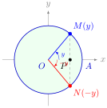
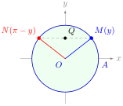
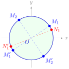
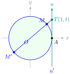
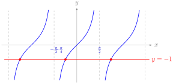
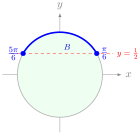
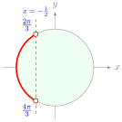
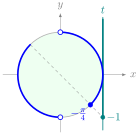

១. មុំដែលមានកូស៊ីនុស និងស៊ីនុសដូចគ្នា
១.១. ចំនួនដែលមានកូស៊ីនុសដូចគ្នា
ក្នុងរង្វង់ត្រីកោណមាត្រផ្ចិត \(\displaystyle O\) ពីរចំនួនពិត \(\displaystyle x\) និង \(\displaystyle y\) មានកូស៊ីនុសស្មើគ្នា លុះត្រាតែចុងធ្នូ \(\displaystyle M\) និង \(\displaystyle N\) មានអាប់ស៊ីសដូចគ្នា (ត្រួតស៊ីគ្នា ឬឆ្លុះគ្នាធៀបនឹងអ័ក្ស \(\displaystyle x'x\))៖

១.២. ចំនួនដែលមានស៊ីនុសដូចគ្នា
ពីរចំនួនពិត \(\displaystyle x\) និង \(\displaystyle y\) មានស៊ីនុសស្មើគ្នា លុះត្រាតែចុងធ្នូ \(\displaystyle M\) និង \(\displaystyle N\) មានអរដោនេដូចគ្នា (ត្រួតស៊ីគ្នា ឬឆ្លុះគ្នាធៀបនឹងអ័ក្ស \(\displaystyle y'y\))៖

២. សមីការត្រីកោណមាត្រ
២.១. សមីការកូស៊ីនុស
- បើ \(\displaystyle |a| > 1\) សមីការគ្មានចម្លើយ។
- បើ \(\displaystyle a = 1 \implies x = 2k\pi\); បើ \(\displaystyle a = -1 \implies x = \pi + 2k\pi\); បើ \(\displaystyle a = 0 \implies x = \frac{\pi}{2} + k\pi\) (\(\displaystyle k \in \mathbb{Z}\))។
បើ \(\displaystyle a \in (-1, 1)\) មាន \(\displaystyle \alpha\) ដែល \(\displaystyle \cos\alpha = a\) នោះ
\[\cos x = \cos\alpha \iff x = \pm\alpha + 2k\pi \quad (k \in \mathbb{Z}).\]
ដោះស្រាយសមីការ \(\displaystyle \cos\left(x - \frac{\pi}{4}\right) = \sin 3x\) រួចដៅចុងធ្នូចម្លើយលើរង្វង់ត្រីកោណមាត្រ។
មើលដំណោះស្រាយ
ដោយ \(\displaystyle \sin 3x = \cos\left(\frac{\pi}{2} - 3x\right)\) គេបាន
ដោះស្រាយបាន \(\displaystyle 4x = \frac{3\pi}{4} + 2k\pi \implies x = \frac{3\pi}{16} + \frac{k\pi}{2}\) (ចុងធ្នូ ៤ គឺ \(\displaystyle M_1, M'_1, M_2, M'_2\)) ឬ \(\displaystyle -2x = -\frac{\pi}{4} + 2k\pi \implies x = \frac{\pi}{8} + k\pi\) (ចុងធ្នូ ២ គឺ \(\displaystyle N_1, N'_1\)), (\(\displaystyle k \in \mathbb{Z}\))។

២.២. សមីការស៊ីនុស
- បើ \(\displaystyle |a| > 1\) សមីការគ្មានចម្លើយ។
- បើ \(\displaystyle a = 1 \implies x = \frac{\pi}{2} + 2k\pi\); បើ \(\displaystyle a = -1 \implies x = -\frac{\pi}{2} + 2k\pi\); បើ \(\displaystyle a = 0 \implies x = k\pi\) (\(\displaystyle k \in \mathbb{Z}\))។
បើ \(\displaystyle a \in (-1, 1)\) មាន \(\displaystyle \alpha\) ដែល \(\displaystyle \sin\alpha = a\) នោះ
\[\sin x = \sin\alpha \iff x = \alpha + 2k\pi \quad \text{ឬ} \quad x = \pi - \alpha + 2k\pi \quad (k \in \mathbb{Z}).\]
ដោះស្រាយសមីការ \(\displaystyle \sin 2x = \sin\left(\frac{\pi}{3} - x\right)\) និង \(\displaystyle 2\sin x\cos x - 3\sin 2x = 0\)។
មើលដំណោះស្រាយ
ក. \(\displaystyle 2x = \frac{\pi}{3} - x + 2k\pi \implies x = \frac{\pi}{9} + \frac{2k\pi}{3}\) ឬ \(\displaystyle 2x = \pi - \left(\frac{\pi}{3} - x\right) + 2k\pi \implies x = \frac{2\pi}{3} + 2k\pi\) (\(\displaystyle k \in \mathbb{Z}\))។
ខ. \(\displaystyle \sin 2x - 3\sin 2x = 0 \implies -2\sin 2x = 0 \implies 2x = k\pi \implies x = \frac{k\pi}{2}\) (\(\displaystyle k \in \mathbb{Z}\))។
២.៣. សមីការតង់សង់ និងកូតង់សង់
- ចំពោះ \(\displaystyle \tan x = t = \tan\alpha\) (លក្ខខណ្ឌ \(\displaystyle x \ne \frac{\pi}{2} + k\pi\))៖ \(\displaystyle x = \alpha + k\pi\) (\(\displaystyle k \in \mathbb{Z}\))។
- ចំពោះ \(\displaystyle \cot x = m = \cot\alpha\) (លក្ខខណ្ឌ \(\displaystyle x \ne k\pi\))៖ \(\displaystyle x = \alpha + k\pi\) (\(\displaystyle k \in \mathbb{Z}\))។
ជាទូទៅ \(\displaystyle \tan u(x) = \tan v(x) \iff u(x) = v(x) + k\pi\) (ដោយរក្សាលក្ខខណ្ឌដែនកំណត់ \(\displaystyle \cos u(x) \ne 0, \cos v(x) \ne 0\)) និង \(\displaystyle \cot u(x) = \cot v(x) \iff u(x) = v(x) + k\pi\) (\(\displaystyle \sin u(x) \ne 0, \sin v(x) \ne 0\))។

ដោះស្រាយសមីការ \(\displaystyle \tan x = -1\) និង \(\displaystyle 2(\cot 2x - \cot 3x) = \tan 2x + \cot 3x\)។
មើលដំណោះស្រាយ
ក. \(\displaystyle \tan x = \tan\left(-\frac{\pi}{4}\right) \implies x = -\frac{\pi}{4} + k\pi\) (\(\displaystyle k \in \mathbb{Z}\)) ដែលជាអាប់ស៊ីសចំណុចប្រសព្វរវាងក្រាប \(\displaystyle y = \tan x\) និងបន្ទាត់ \(\displaystyle y = -1\)។
ខ. លក្ខខណ្ឌកំណត់ \(\displaystyle \sin 2x \ne 0, \cos 2x \ne 0, \sin 3x \ne 0\)។ បំប្លែងបាន \(\displaystyle 2\cot 2x - \tan 2x = 3\cot 3x \implies \frac{2\cos^2 2x - \sin^2 2x}{\sin 2x\cos 2x} = 3\cot 3x \implies \cot 2x = \cot\frac{\pi}{4}\)... បើពិនិត្យតាម \(\displaystyle \tan 2x = 1\) ឬពិនិត្យចម្លើយជំនួស គេរកឃើញថាសមីការគ្មានចម្លើយដែលផ្ទៀងផ្ទាត់លក្ខខណ្ឌកំណត់។

៣. វិសមីការត្រីកោណមាត្រ
ដើម្បីដោះស្រាយវិសមីការត្រីកោណមាត្រ គេប្រើរង្វង់ត្រីកោណមាត្រដោយដៅចុងធ្នូតាមតម្លៃគោល \(\displaystyle \alpha\) រួចកំណត់ធ្នូដែលផ្ទៀងផ្ទាត់វិសមីការ។
៣.១. វិសមីការស៊ីនុស
ចំពោះ \(\displaystyle -1 \le a \le 1\) ដែល \(\displaystyle \sin\alpha = a\) (\(\displaystyle \alpha \in \left[-\frac{\pi}{2}, \frac{\pi}{2}\right]\))៖
- \(\displaystyle \sin x \ge a \iff \alpha + 2k\pi \le x \le \pi - \alpha + 2k\pi\) (\(\displaystyle k \in \mathbb{Z}\))
- \(\displaystyle \sin x \le a \iff -\pi - \alpha + 2k\pi \le x \le \alpha + 2k\pi\) (\(\displaystyle k \in \mathbb{Z}\))

៣.២. វិសមីការកូស៊ីនុស
ចំពោះ \(\displaystyle -1 \le a \le 1\) ដែល \(\displaystyle \cos\alpha = a\) (\(\displaystyle \alpha \in [0, \pi]\))៖
- \(\displaystyle \cos x \le a \iff \alpha + 2k\pi \le x \le 2\pi - \alpha + 2k\pi\) (\(\displaystyle k \in \mathbb{Z}\))
- \(\displaystyle \cos x \ge a \iff -\alpha + 2k\pi \le x \le \alpha + 2k\pi\) (\(\displaystyle k \in \mathbb{Z}\))

៣.៣. វិសមីការតង់សង់ និងកូតង់សង់
ចំពោះ \(\displaystyle \tan\alpha = a\) (\(\displaystyle \alpha \in \left(-\frac{\pi}{2}, \frac{\pi}{2}\right)\))៖
- \(\displaystyle \tan x \le a \iff -\frac{\pi}{2} + k\pi < x \le \alpha + k\pi\) (\(\displaystyle k \in \mathbb{Z}\))
- \(\displaystyle \tan x \ge a \iff \alpha + k\pi \le x < \frac{\pi}{2} + k\pi\) (\(\displaystyle k \in \mathbb{Z}\))

ដោះស្រាយវិសមីការ៖ ក. \(\displaystyle \sin\left(x - \frac{\pi}{3}\right) > \sin x\) និង ខ. \(\displaystyle \cot x < \frac{\sqrt{3}}{3}\)។
មើលដំណោះស្រាយ
ក. \(\displaystyle \sin\left(x - \frac{\pi}{3}\right) - \sin x > 0 \iff 2\cos\left(x - \frac{\pi}{6}\right)\sin\left(-\frac{\pi}{6}\right) > 0 \iff \cos\left(x - \frac{\pi}{6}\right) < 0\)។
ដូច្នេះ \(\displaystyle \frac{\pi}{2} + 2k\pi < x - \frac{\pi}{6} < \frac{3\pi}{2} + 2k\pi \implies \frac{2\pi}{3} + 2k\pi < x < \frac{5\pi}{3} + 2k\pi\) (\(\displaystyle k \in \mathbb{Z}\))។
ខ. \(\displaystyle \cot x < \frac{\sqrt{3}}{3} = \cot\frac{\pi}{3}\) ដោយអនុគមន៍ \(\displaystyle \cot x\) ចុះលើ \(\displaystyle (0, \pi)\) គេបាន \(\displaystyle \frac{\pi}{3} + k\pi < x < \pi + k\pi\) (\(\displaystyle k \in \mathbb{Z}\))។
លំហាត់អនុវត្ត
- ដោះស្រាយសមីការ៖ ក. \(\displaystyle \cos\left(4x + \frac{\pi}{3}\right) = \cos\left(x - \frac{\pi}{6}\right)\) ខ. \(\displaystyle \frac{\sqrt{3}}{\cos^2 x} = 4\tan x\) គ. \(\displaystyle \frac{\sin x + \sin 2x + \sin 3x}{\cos x + \cos 2x + \cos 3x} = \sqrt{3}\)។
- ដោះស្រាយវិសមីការ៖ ក. \(\displaystyle 2\cos\theta \le -\sqrt{2}\) ខ. \(\displaystyle \sqrt{3}\tan\theta - 1 < 0\) គ. \(\displaystyle \cos\left(\frac{1}{2}\theta - \frac{\pi}{3}\right) \le \frac{1}{\sqrt{2}}\) (\(\displaystyle 0 \le \theta < 2\pi\))។
- ក. \(\displaystyle x = -\frac{\pi}{6} + \frac{2k\pi}{3}\) ឬ \(\displaystyle x = -\frac{\pi}{30} + \frac{2k\pi}{5}\) (\(\displaystyle k \in \mathbb{Z}\)) ខ. \(\displaystyle x = \frac{\pi}{6} + k\pi\) ឬ \(\displaystyle x = \frac{\pi}{3} + k\pi\) (\(\displaystyle k \in \mathbb{Z}\)) គ. \(\displaystyle x = \frac{\pi}{6} + \frac{k\pi}{2}\) (\(\displaystyle k \in \mathbb{Z}\), ច្រានចោល \(\displaystyle \frac{2\pi}{3} + 2k\pi, \frac{4\pi}{3} + 2k\pi\))។
- ក. \(\displaystyle \frac{3\pi}{4} + 2k\pi \le \theta \le \frac{5\pi}{4} + 2k\pi\) ខ. \(\displaystyle -\frac{\pi}{2} + k\pi < \theta < \frac{\pi}{6} + k\pi\) គ. \(\displaystyle \frac{\pi}{6} \le \theta \le \frac{7\pi}{6}\)។
ខ្លឹមសារ៖ សៀវភៅពុម្ពគណិតវិទ្យាថ្នាក់ទី១១ របស់ក្រសួងអប់រំ យុវជន និងកីឡា · វាយអត្ថបទ គូររូបភាពឡើងវិញ និងរៀបចំលើអនឡាញដោយលោកគ្រូ សាន សុខលី សម្រាប់ការសិក្សាដោយឥតគិតថ្លៃ និងមិនរកប្រាក់ចំណេញ។ មិនមែនជាការបោះពុម្ពផ្លូវការរបស់ក្រសួងទេ។